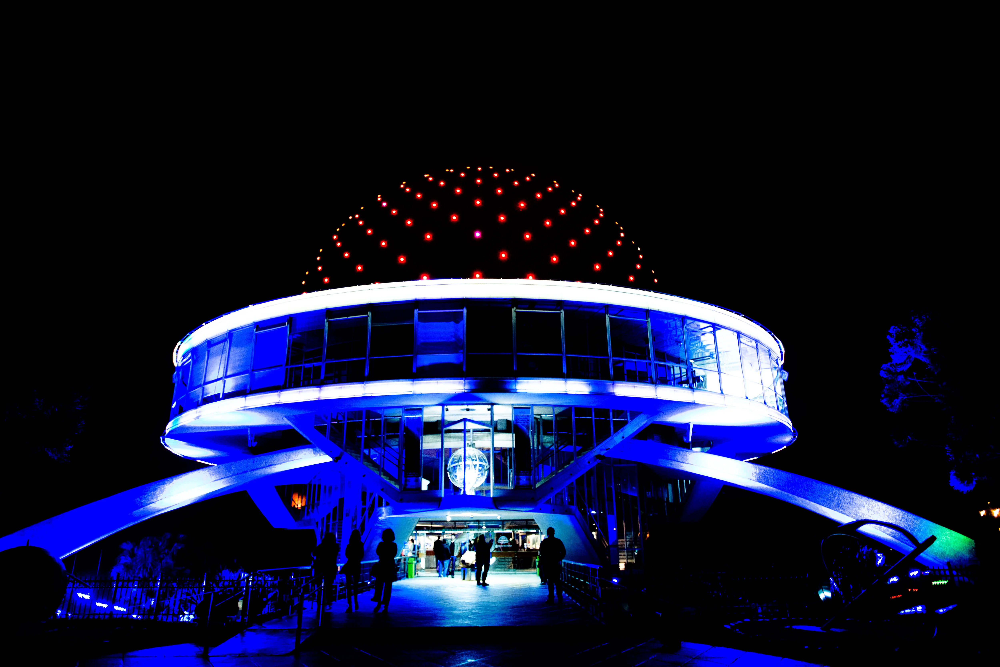

Obras y taxonomías
Recorridos curatoriales para analizar prácticas audiovisuales inmersivas.
Archivo curado de obras, recursos y procesos de producción en entornos inmersivos.

Recorridos curatoriales para analizar prácticas audiovisuales inmersivas.
Artistas, instituciones, festivales y herramientas del campo fulldome.
Conceptos iniciales para diseñar y desarrollar obras en entornos fulldome.
Festivales, plataformas y espacios donde circulan las obras fulldome.
Esta sección reúne orientaciones iniciales para comprender cómo se diseñan y producen obras fulldome. Incluye nociones sobre composición hemisférica, espacialización sonora y dinámicas de trabajo entre arte, ciencia y tecnología.
Principios de composición hemisférica, escala, orientación de cámara y percepción espacial en domos de proyección.
Conceptos básicos de espacialización sonora y construcción de atmósferas inmersivas para experiencias audiovisuales fulldome.
Procesos de producción colaborativos que articulan arte, programación, visualización y mediación educativa.